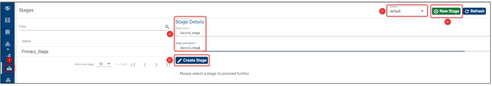
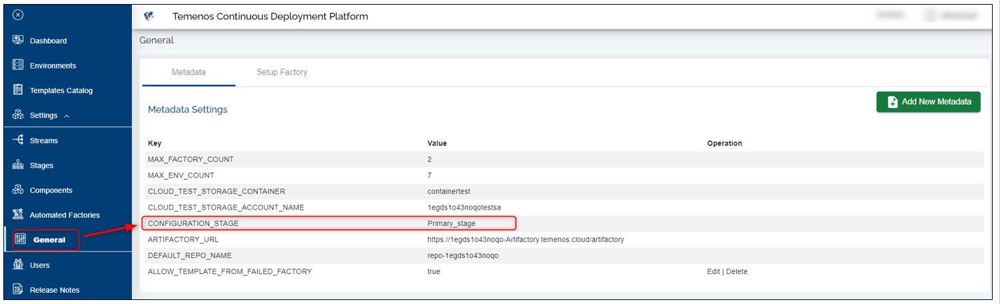

Stage API/UI – Feature Description
A Stage is a logical name for a promotional stage.
Every component/module developed by an organization needs to go through several steps to be declared ready for deployment to product. These steps are exactly what we call stages.
Each stage has the following fields:
1. Name: A simple name for the stage
Note
The name can only be set on creation time and it cannot be updated.
2. Description: A simple description to be helpful to users.
3. Enabled/ Disabled Flag: A stage can be enabled or disabled at any time provided there are no Factories associated to it.
When a new stage is created, an isolated folder is created in the Artifactory Server to enable the binary/ installable components to be uploaded. When the components work well with other components/modules, the component is promoted to other stages, as defined by factories.
The promotion of the components across stages is conditional based on the status of tests that are done during a factory run. If the tests succeed, the components will be promoted to the next stage.
How to Set Up/ Edit/ Delete Stages
Set-up/ Create a Stage
- Login to the Temenos Continuous Deployment Platform.
- Click on Settings button on the left menu > this will expand a menu containing buttons for: Streams, Stages, Products, Factory and General.
- Click on Stage button, make sure you select the Stream where you want to add a stage and then on the New Stage on the top right.
- Fill the name (mandatory field). Take into account these conditions (also notified on the screen): Name can start only with a letter or an underscore and it can contain only letters, digits, underscores or hyphens.
- Fill the description (mandatory field).
- Click Create.
Note: Instead of choosing the enable option, you can create a disabled stage and enable it later, but the default option should be enable.

Edit a Stage
A stage can have only the description edited/ changed, but not the name. Why? Because when creating a stage, a folder is created automatically in the Artifactory containing the stage name. This folder will contain the components that you may be added for the respective stage.
Just click the edit button, change the description and then click update.
Default Stage
After logging to the portal, go to the General button on the left menu. Here you can see and edit the metadata.
The DEFAULT STAGE NAME can be defined after the creation of an organization in order to be able to use the assemble functionalities and can be editable.
In case it has not been defined at the beginning, then when you try to create a stream, a new field about default stage will appear and here you need to insert a name for the default stage.
This field will be automatically added into the metadata and will not be editable.
Delete a Stage
Note
The default stage cannot be deleted (this is the stage configured into the metadata).
Example:
- Suppose we have created a stage named Primary_stage. No matter if we have configured further components and products, we can just go and delete this stage.
Any other created stage can be deleted at any moment as it is not dependent of the subsequent features added such as components and products. Components and Products belong to the streams.
Example of the default stage defined into the metadata (you can set any name you prefer instead of demo_stage):

Note
The MAX_ENV_COUNT count only applies for User Environments and does not count the factory environments. If the value is not set at the organization level, the value is defaulted to 10. Once created, the values will not be editable / deleteable by the user.